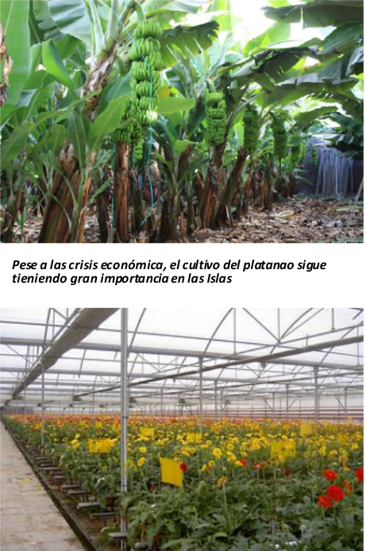

En agricultura ,un poco más tarde de esta ley, se comienza a imponer el monocultivo del plátano y el tomate,gracias en buena medida a la inversión de empresas británicas.Sin embargo, el estallido de la Primera Guerra Mundial en 1914 provocó una crisis económica ante la imposibilidad de continuar exportando a los países europeos.
•Este periodo de crisis comenzó a superarse a partir de 1920, cuando se inició un incremento de las exportaciones y la recuperación del tráfico marítimo. Pero a finales de la década, la crisis financiera internacional de 1929 y la gran competencia de otras áreas productoras de plátanos repercutieron negativamente en el sector exportador canario. Esta crisis se agudizó con el inicio de la Guerra Civil española en 1936 y, posteriormente, con la Segunda Guerra Mundial.
Ante estas circunstancias, el

régimen franquista impuso en Canarias un modelo económico de signo autárquico.De este modo, la economía canaria pasó a estar dirigida inicialmente por la Comandancia Militar de Canarias y más adelante por el Mando Económico,hasta que, a partir de 1960, el boom turístico introdujo un nuevo modelo económico en el archipiélago.
La crisis platanera comportó la necesidad de una alternativa en la producción agraria. Así, se potenció el desarrollo de nuevos sistemas de cultivos, como la floricultura (claveles, rosas y plantas ornamentales), que alcanzó un gran desarrollo en Tenerife y en Gran Canaria.
•En la actualidad, se mantiene la existencia de la dualidad entre cultivos de exportación y cultivos de autoabastecimiento, que ha dado lugar a la aparición en las islas de diferentes paísajes agrarios determinados por cómo son las parcelas, la extensión, los límites,las características y los tipos de cultivos. Dichos paisajes son los siguientes: